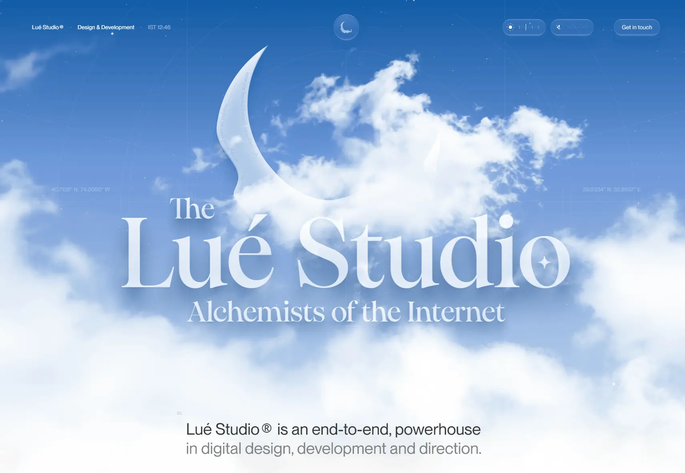

Lué Studio
- Многостраничный
- Агентства и студии
- Дизайн-студия
- Студия разработки
- Брендинг
- Дизайнерам
- Агентствам
- Продуктовым командам
- Минимализм
- Редакционный
- Люкс
- Светлая тема
- Нейтральный фон
- Графика WebGL и 3D
- Видео-фон
- Переходы между страницами
- Next.js
- Vercel
- TailwindCSS
- Pixi.js
- Framer Motion
- Английский язык
- Турция
- Действующий сайт

Что это
Сайт студии из двух человек: сайты, цифровые продукты и брендинг для стартапов и крупных брендов. Первый экран — небо с облаками и месяцем, а себя команда в шутку называет алхимиками интернета, превращающими обычное в золото. Интересен как образец дорогого студийного сайта, где история и детали важнее списка услуг. Живописный оригинальный сайт студии, которая занимается разработкой сайтов, приложений и брендинга. Опыт команды из двух человек иронично представлен как тайное знание алхимиков.
Что смотреть в первую очередь
Смотреть первый экран с облаками и то, как главы сменяют друг друга при прокрутке. Затем — страницу философии: там студия объясняет, почему остаётся командой из двух человек.
Приёмы
- Графика WebGL и 3D
- Видео-фон
- Переходы между страницами
Интересные факты
- Первый экран — небо с облаками и полумесяцем; в углах — координаты Нью-Йорка и Анкары, а крупный заголовок «The Lué Studio» нарисован на canvas (в разметке пустой элемент с классом hero-pixi), поэтому в тексте страницы его нет — только мелкий вводный абзац.
- Тема алхимии держится через весь текст: студия сравнивает себя с алхимиками, которые превращают «базовый металл в чистое золото», то есть обычное — в необычное.
- Разделы пронумерованы как главы (01–07) и подписаны короткими тезисами, почти в каждом — фоновое видео: в разметке девять тегов video с файлами mp4 и webm из /assets.
- В CSS у навигации заготовлены четыре заливки — утро, полдень, вечер и ночь (--nav-fill-morning/midday/afternoon/night): оформление шапки меняется от времени суток.
- О себе студия говорит без прикрас: команда из двух человек, дизайнер Oğuz Yağız Kara и инженер Necati Koçlu, без аутсорса и шаблонов, со ссылками на личные профили в X.
- Юридических страниц нет: в карте сайта 18 адресов — главная, работы, философия и контакты, политики конфиденциальности и условий нет.
- Контакты — не письмо в свободной форме, а пошаговый опрос: на /contact «Start», «press Enter» и «займёт 4+ минуты».
Паспорт
- Домен
- lue.studio
- Тип сайта
- Многостраничный
- Категории
- Агентства и студии
- Подкатегории
- Дизайн-студия, Студия разработки, Брендинг
- Для кого
- Дизайнерам, Агентствам, Продуктовым командам
- Стиль
- Минимализм, Редакционный, Люкс
- Язык
- Английский
- Страна
- Турция
- Автор
- Oğuz Yağız Kara и Necati Koçlu — студия из двух человек
- Год
- 2025
- Добавлен в коллекцию
- 02.11.2026
Палитра
-
#EDF4FA— 41% кадра -
#7DA3D8— 23% кадра -
#2E6DB3— 20% кадра -
#B7CFEA— 11% кадра -
#5586C8— 5% кадра
- Режим
- Светлая
- Цвет фона
- Нейтральный
Технологии
- Next.js
- Vercel
- TailwindCSS
- Pixi.js
- Motion